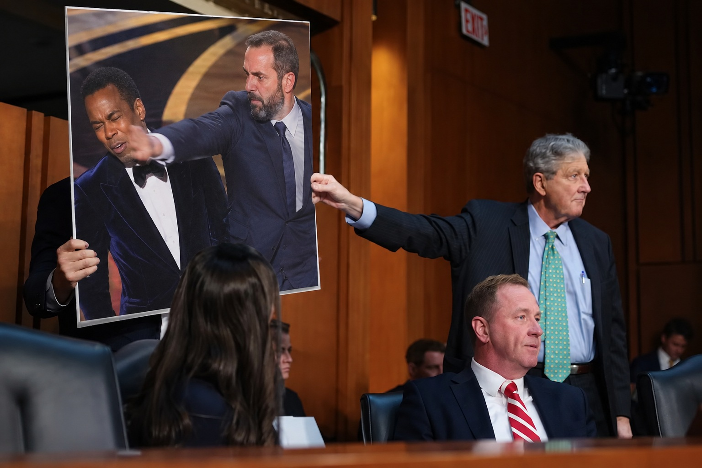

SCHMITT USES FRUIT, HISTORY TO BLOW JACK SMITH CASE WIDE OPEN
Senator reveals additional evidence involving Hollywood assault, suspicious produce and a traitor dead since 1780.

WASHINGTON — Senator Eric Schmitt continued dismantling former Special Counsel Jack Smith Wednesday with a devastating series of questions that were not shown during the televised hearing, expanding his investigation beyond college basketball into Hollywood violence, suspicious fruit and an eighteenth-century act of treason.
Schmitt began by confronting Smith with photographic evidence showing a man named Smith assaulting comedian Chris Rock before millions of witnesses at the Academy Awards.
“Isn't it true, Mr. Smith, that you walked onto that stage and struck Chris Rock in the face?” Schmitt demanded.
“No,” Smith replied. “That's Will Smith.”
Schmitt paused.
“So your testimony under oath is that there are multiple Smiths?”
“Yes.”
“Convenient.”
Schmitt then moved to Georgia.
“You've repeatedly denied improper coordination with prosecutors in Georgia,” he said. “Would it surprise you to learn that investigators have obtained documentary evidence directly connecting you to Georgia?”
Schmitt dramatically produced a grocery receipt.
“Georgia peaches,” he said.
Smith examined the exhibit.
“Those are peaches.”
“Precisely. Georgia peaches.”
Committee staff then informed the senator that the peaches had actually been grown in South Carolina.
“Fruit doesn't lie, Mr. Smith,” Schmitt replied.
But Schmitt saved his most damaging evidence for last.
“Isn't it true that an American official named Jack Smith conspired with enemies of the United States and was subsequently executed for treason?”
“No.”
“We have historical records.”
“I think you're referring to Major John André,” Smith said. “He conspired with Benedict Arnold and was executed in 1780.”
The hearing room fell silent.
Schmitt slowly lowered his papers.
“Interesting that you knew that without checking.”
The senator later described the questioning as another important step toward determining why Smith knew so much about an eighteenth-century British spy, Georgia fruit distribution and the activities of other men sharing his surname.
Smith attempted to respond, but Schmitt called him a dirtbag.